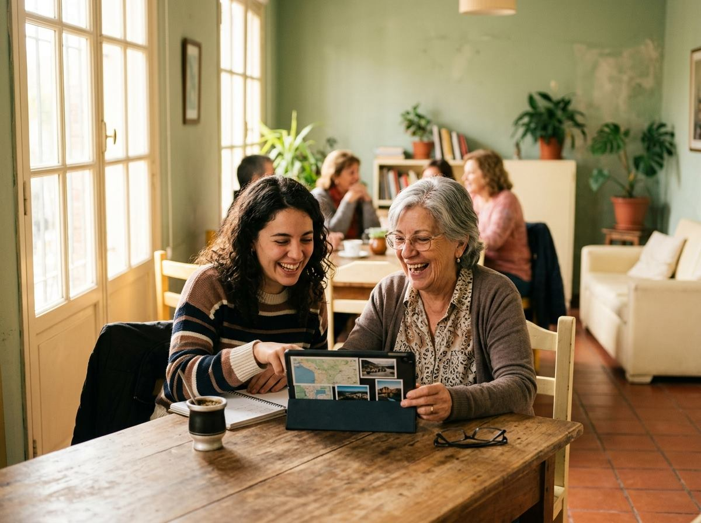
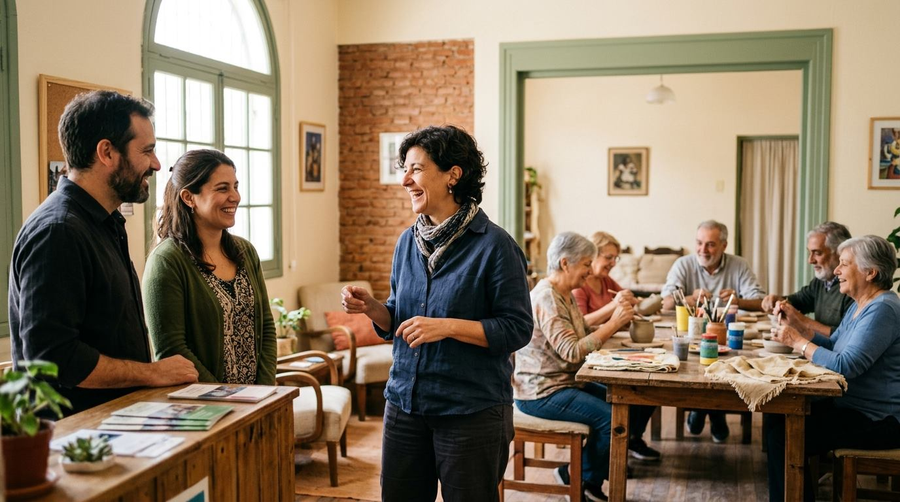
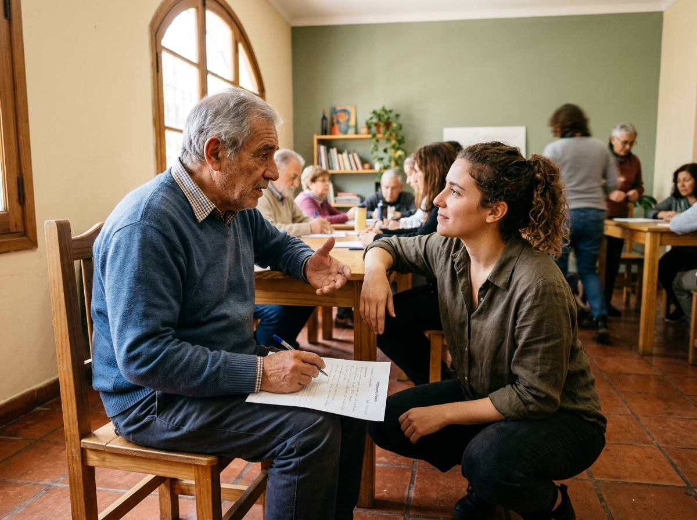

Talleres y actividades para adultos mayores · Santa Fe
Conectamos generaciones, creamos experiencias.
Conectamos instituciones, talleristas y adultos mayores para generar experiencias de aprendizaje, creatividad y bienestar.

¿Qué es InterGeneracional?
Somos una plataforma de intermediación y gestión de talleres. No somos un directorio de profesores: seleccionamos, coordinamos y hacemos seguimiento de cada actividad para que las instituciones ofrezcan experiencias de calidad a sus residentes y asistentes.
Talleristas verificados
Evaluamos perfiles, antecedentes y experiencia antes de incorporar a cada tallerista.
Gestión integral
Nos ocupamos de la búsqueda, contratación y coordinación. La institución se libera de esa carga.
Calidad medida
Encuestamos a participantes e instituciones y registramos el desempeño de cada taller.
* Cifras ilustrativas del prototipo. No representan resultados reales.
Talleres destacados
Ver todos →Cómo funciona
Un modelo que conecta a tres actores, con InterGeneracional gestionando la calidad en el centro.
- 1La institución se contacta con InterGeneracional.
- 2Explora las propuestas disponibles o solicita un taller personalizado.
- 3InterGeneracional selecciona y coordina al tallerista adecuado.
- 4Se realiza la actividad.
- 5Se evalúa la satisfacción y se registra el desempeño.
- 1Se postulan para formar parte de la red.
- 2InterGeneracional evalúa su perfil y experiencia.
- 3Se incorporan a la cartera de talleristas asociados.
- 4Reciben oportunidades de dictar talleres.
- 5Su desempeño es evaluado y registrado.
- 1Consultan las actividades disponibles en su zona.
- 2Conocen sus características, fechas y ubicación.
- 3Se comunican con el organizador mediante los datos de contacto publicados.
Explorar talleres
Actividades presenciales en distintos barrios de Santa Fe capital.
Para instituciones
Actividades que enriquecen la experiencia de tu institución.
InterGeneracional se ocupa de encontrar, seleccionar y coordinar talleristas para implementar actividades en centros de día, residencias, centros culturales, clubes y otras organizaciones.

Cartera de talleristas
Acceso a una red de profesionales verificados en múltiples disciplinas.
Actividades adaptadas
Propuestas pensadas para las características de tus participantes.
Menos carga administrativa
Nosotros gestionamos la búsqueda y la coordinación.
Coordinación y seguimiento
Acompañamos cada actividad de principio a fin.
Evaluación de satisfacción
Recibís informes con la opinión de participantes.
Programas continuos
Armamos ciclos anuales de actividades a medida.
Instituciones asociadas (ficticias)
Nuestra cartera de talleristas
Cada perfil es evaluado y su desempeño se registra taller a taller. Hacé clic en un perfil para ver su ficha completa.
¿Querés sumarte como tallerista?
Si tenés conocimientos o experiencia para compartir, postulate y evaluaremos tu perfil.
Calidad y confianza
La calidad no se improvisa. La acompañamos.
Hacemos seguimiento de cada taller y de sus responsables. No es solo un sistema de calificaciones: es un mecanismo de control de calidad.
Selección
Evaluación de perfiles, antecedentes y experiencia de los talleristas.
Seguimiento
Registro de talleres realizados y cumplimiento de las actividades.
Satisfacción
Encuestas a participantes e instituciones.
Mejora continua
Usamos las evaluaciones para mejorar la oferta y seleccionar los mejores perfiles.

Taller: Tu celular, tus posibilidades
Tallerista: Lucía Fernández · Centro de Día Los Aromos
“Lucía tuvo mucha paciencia y nos enseñó cosas que ahora usamos todos los días”.— Participante (comentario ficticio)
Espacios disponibles
Las instituciones con instalaciones disponibles pueden ofrecerlas para actividades. Nosotros las conectamos con talleristas y participantes interesados.
Contacto
Escribinos y te respondemos a la brevedad.
- 📞 (0342) 455-0000 (teléfono demostrativo)
- ✉️ hola@intergeneracional.demo (correo ficticio)
- 📍 Santa Fe capital, Argentina